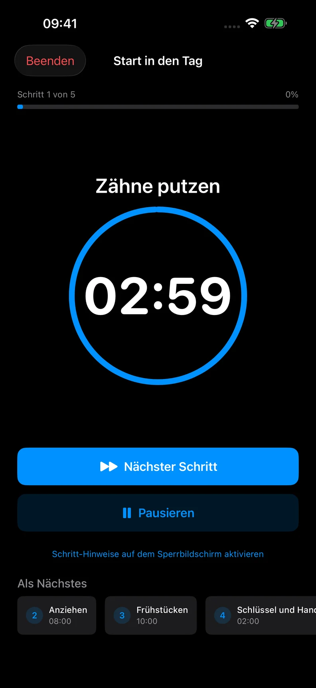

Praktische Anleitungen
So nutzt du einen Timer für eine Routine mit mehreren Schritten
Ein Routinen-Timer gibt jedem Teil eines Ablaufs eine eigene Zeit. Statt eines Countdowns für den ganzen Morgen oder Abend siehst du den Schritt, der gerade dran ist.
Wähle einen Ablauf mit klarem Ende
Beginne mit etwas, das du wiederholst: das Haus verlassen, den Arbeitsplatz vorbereiten oder den Abend ausklingen lassen. Überlege zuerst, wann der Ablauf für dich fertig ist.
Beim Vorbereiten des Arbeitsplatzes könnte das heißen: Du sitzt am Schreibtisch und deine erste Aufgabe ist bereit. Du musst nicht gleich den ganzen Arbeitstag planen.
Benenne Schritte als konkrete Handlungen
Nutze klare Namen wie „Schreibtisch aufräumen“, „Wasser holen“ und „Erste Aufgabe öffnen“. Ein Titel wie „Produktiv sein“ sagt dir nicht, was du als Nächstes tun sollst.
Ein Schritt sollte klein genug sein, dass du sein Ende erkennst. Enthält er mehrere unabhängige Handlungen, teile ihn versuchsweise auf. Wird die Liste zu kleinteilig, fasse Schritte wieder zusammen.
Lege eine veränderbare Dauer fest
Schätze zunächst eine Dauer für jeden Schritt. Zum Beispiel drei Minuten zum Aufräumen, zwei Minuten zum Wasserholen und fünf Minuten zum Vorbereiten der ersten Aufgabe. Das sind zehn geplante Minuten ohne Pausen und Übergänge.
Probiere den Ablauf einmal aus, bevor du diese Zeiten als Plan verwendest. Brauchst du länger, erhöhe die Dauer. Kürzer ist nicht automatisch besser.
Starte, pausiere und gehe bewusst weiter
Starte deine Routine in Rotinely, um den aktuellen Schritt mit Timer zu sehen. Pausiere bei einer Unterbrechung und setze fort, wenn es für dich passt. Tippe auf Nächster Schritt, sobald du mit der aktuellen Tätigkeit fertig bist.
Bei null beginnt der nächste Schritt nicht automatisch. Du entscheidest, wann es weitergeht, damit der Ablauf zu deinem tatsächlichen Tun passt. Du kannst die Routine auch vorzeitig beenden, wenn der Rest gerade nicht mehr sinnvoll ist.

Nutze Erinnerungen bei Bedarf
Du kannst einer Routine bei geöffneter App folgen, ohne einen Zeitplan anzulegen. Erinnerungen nach Wochentagen und Sprachführung sind optionale Pro-Funktionen.
Erinnerungen benötigen deine Erlaubnis für Mitteilungen. Fokus, Lautlosmodus und iOS-Einstellungen können Ton und Zustellung beeinflussen. Sprachführung funktioniert bei geöffneter App; verlasse dich nicht darauf als garantierten Hintergrundalarm.
Prüfe den Ablauf, nicht nur die Zeit
Schau dir danach Reihenfolge und Detailgrad an. Musstest du vor dem ersten Schritt noch etwas vorbereiten? Hat ein Übergang gefehlt? War das Ende eines Schritts unklar?
Passe den Plan an diese Beobachtungen an. Ein Routinen-Timer kann deinen Ablauf sichtbar machen, ohne dass jeder Tag nach derselben Uhr laufen muss.